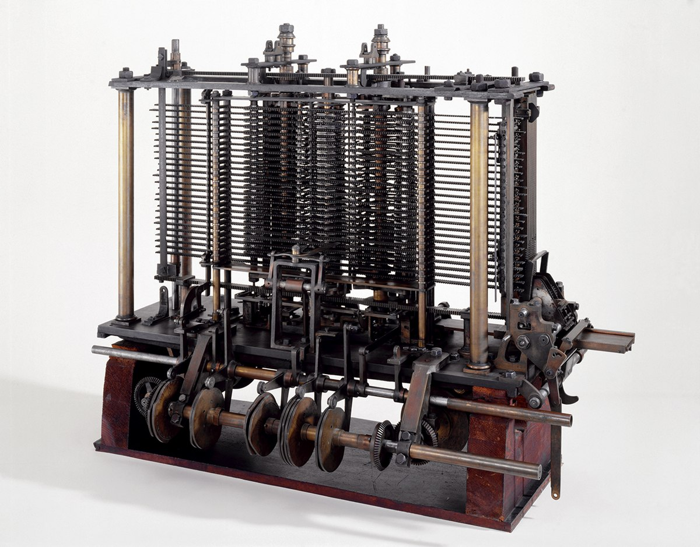
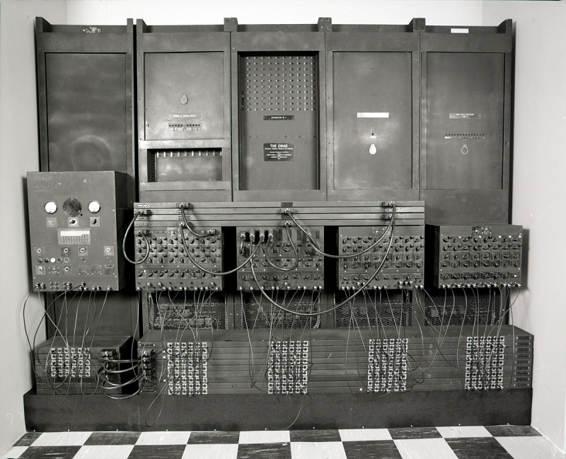
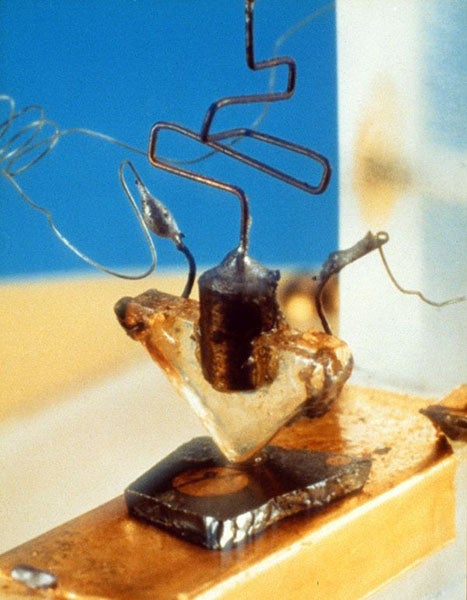

🔬 Ilmu Fondasi: Logika Boolean
Jauh sebelum sirkuit elektronik pertama dibuat, fondasi matematika untuk komputasi digital telah diletakkan. Pada tahun 1854, George Boole memperkenalkan sistem aljabar yang kini dikenal sebagai Logika Boolean. Sistem ini menyederhanakan ide-ide logika yang kompleks menjadi dua nilai sederhana: Benar (TRUE) atau Salah (FALSE).
Pada tahun 1938, Claude Shannon dalam tesis magisternya yang legendaris menunjukkan bagaimana aljabar Boolean ini dapat diimplementasikan secara sempurna menggunakan sakelar elektronik. Dengan merepresentasikan TRUE sebagai 1 (sakelar ON) dan FALSE sebagai 0 (sakelar OFF), operasi logika seperti AND, OR, dan NOT dapat dibangun menjadi sirkuit fisik. Ini adalah jembatan krusial antara matematika abstrak dan desain sirkuit digital yang menjadi inti dari semua komputer modern.
⚙️ Generasi Nol: Era Mekanis & Elektromekanis
Ide tentang mesin hitung otomatis sudah ada jauh sebelum era elektronik. Charles Babbage, seorang matematikawan Inggris, pada abad ke-19 merancang Analytical Engine, sebuah komputer mekanis serba guna yang memiliki elemen-elemen dasar seperti unit pemrosesan (disebut "mill") dan memori (disebut "store").

💡 Fakta Menarik: Programmer Pertama di Dunia
Ada Lovelace, putri dari penyair Lord Byron, bekerja sama dengan Babbage. Ia menulis catatan rinci tentang Analytical Engine dan membuat algoritma pertama yang dimaksudkan untuk diproses oleh mesin. Karena karyanya ini, ia diakui sebagai programmer komputer pertama di dunia.
Pada akhir 1930-an, Konrad Zuse di Jerman membangun serangkaian komputer elektromekanis menggunakan relay. Mesinnya, Z3 (1941), adalah komputer otomatis pertama yang dapat diprogram dan berfungsi penuh, membuktikan bahwa mesin komputasi yang kompleks dapat dibangun.
🔌 Generasi Pertama: Tabung Vakum & Arsitektur von Neumann
Era komputer elektronik dimulai dengan mesin raksasa yang menggunakan ribuan tabung vakum sebagai sakelar. Salah satu yang paling terkenal adalah ENIAC (1946), komputer elektronik serba guna pertama. Namun, ENIAC memiliki kelemahan besar: ia diprogram dengan cara menyambung ulang kabel secara manual, sebuah proses yang bisa memakan waktu berhari-hari.

Sebuah terobosan besar datang dari matematikawan John von Neumann, yang mengusulkan konsep stored-program. Ide cemerlang ini menyatakan bahwa instruksi (program) dapat disimpan di dalam memori komputer bersama dengan data. Komputer tidak lagi perlu diubah secara fisik untuk menjalankan program yang berbeda. Konsep ini diimplementasikan pada komputer seperti EDVAC dan IAS, yang menjadi prototipe fundamental untuk hampir semua komputer modern.
💡 Fakta Menarik: Arti Asli "Komputer"
Sebelum mesin elektronik ada, kata "komputer" merujuk pada sebuah profesi. "Komputer" adalah orang (biasanya wanita) yang pekerjaannya adalah melakukan perhitungan matematis yang panjang dan berulang-ulang dengan tangan, misalnya untuk tabel balistik militer atau data astronomi.
💡 Generasi Kedua: Revolusi Transistor & Sirkuit Terpadu
Penemuan transistor di Bell Labs pada tahun 1947 oleh John Bardeen, Walter Brattain, dan William Shockley mengubah segalanya. Sebagai perangkat solid-state berbahan silikon, transistor jauh lebih kecil, lebih cepat, lebih dingin, dan lebih murah untuk diproduksi secara massal daripada tabung vakum.

Inovasi berikutnya adalah sirkuit terpadu (IC) pada akhir 1950-an, yang dikembangkan oleh Jack Kilby dan Robert Noyce. IC mengintegrasikan banyak transistor ke dalam satu keping silikon (chip). Perkembangan ini melahirkan Hukum Moore pada tahun 1965, yang memprediksi penggandaan jumlah transistor pada sebuah chip setiap 18-24 bulan.
💡 Fakta Menarik: Lahirnya "Silicon Valley"
Robert Noyce dan tujuh insinyur lainnya (dijuluki "Traitorous Eight" atau "Delapan Pengkhianat") meninggalkan perusahaan William Shockley karena perbedaan visi. Mereka kemudian mendirikan Fairchild Semiconductor, perusahaan yang menjadi cikal bakal banyak perusahaan teknologi lainnya. Keberhasilan Fairchild dan perusahaan-perusahaan turunannya di area Santa Clara, California, menjadi alasan mengapa wilayah tersebut kini dikenal sebagai "Silicon Valley", merujuk pada bahan dasar pembuatan chip.